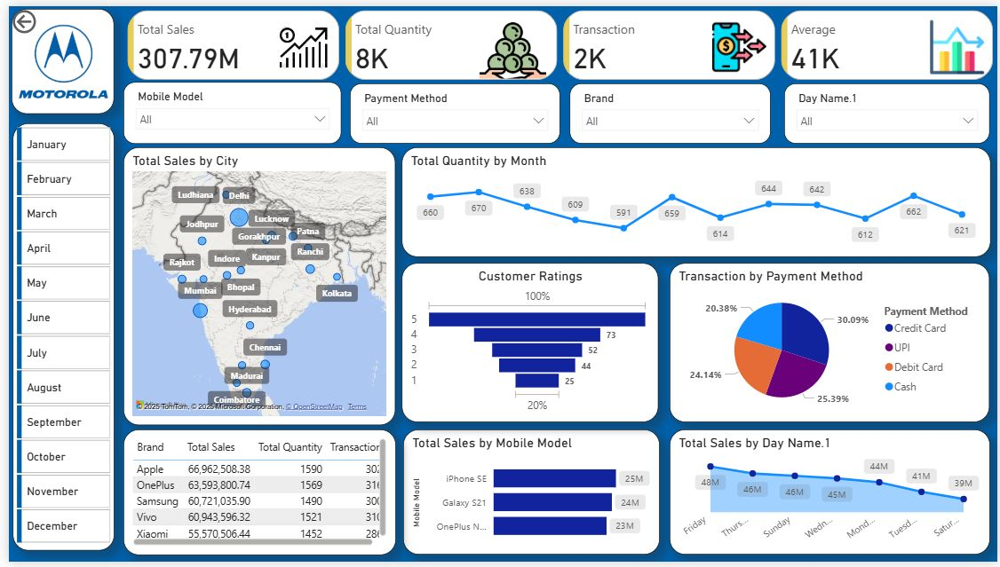
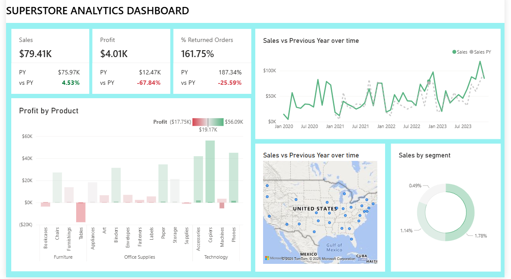

AJAY
Hi There, I'm
I'm Ajay Prajapati, a Data Analyst with skills in Excel, SQL, Power BI, and Python (Pandas, NumPy, Matplotlib). I work on cleaning, analyzing, and visualizing data to find useful insights. I enjoy making dashboards and reports that help in better decision-making. I also have experience in automating tasks and performing advanced data analysis using Python.
I am a detail-oriented and analytical Data Analyst with a strong foundation in Excel, SQL, Python, and data visualization tools like Power BI and Tableau. I specialize in cleaning, analyzing, and interpreting complex datasets to uncover insights and support data-driven decision-making. With a problem-solving mindset and a passion for numbers, I turn raw data into meaningful stories that help businesses grow and improve. I am continuously learning to stay up-to-date with the latest trends in data analytics and technology.
Transforming raw numbers into clear, meaningful visual narratives that inspire better decisions.
Preparing datasets through cleaning, validation, and structuring for accurate analysis.
Uncovering trends, patterns, and hidden opportunities within complex datasets.
Delivering reports and dashboards that directly support strategic business goals.
I create powerful dashboards using Power BI...
I use Excel, Python, and SQL to clean data.
I analyze trends and generate actionable insights.
Using Python libraries to analyze and visualize data.
Created an interactive Sales Dashboard in Excel by cleaning raw data, building pivot tables, charts, and slicers to visualize KPIs and sales trends for better decision-making
Created an interactive Mobile Sales Dashboard in Power BI by cleaning and modeling raw data, building DAX measures, and designing visualizations (sales trend, top products, region performance, KPIs)
Built an interactive Superstore Sales Dashboard in Power BI by cleaning and modeling data, creating DAX measures, and designing visualizations (sales trend, top categories, region-wise performance, KPIs).
Solved real business problems using SQL queries such as identifying top products, customer purchase patterns, region-wise sales, and monthly trends. Generated insights that supported data-driven decision making.

Performed Sales Store Analysis using SQL by writing queries to identify top products, region-wise sales, customer purchase behavior, and monthly trends. Generated insights that improved decision-making and highlighted profitable business segments.
Performed EDA on Customer Churn data to identify key factors like contract type, monthly charges, and payment method, and delivered insights through visualizations for customer retention.